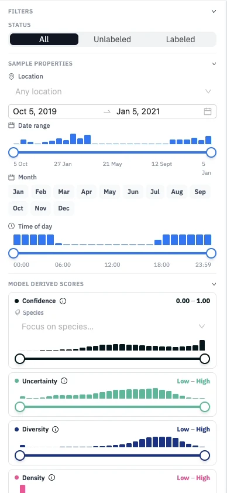

Filters and Model Scores
Filters let you focus on part of a dataset, for example unlabelled clips from one site at dawn. They narrow both the feed and the projection, and the feed can be sorted by the same values.
Filters
| Filter | Shows | From phase |
|---|---|---|
| Status | All, unlabelled, or labelled clips; labelled clips can be narrowed to chosen species. | 3 |
| Location | Clips from one or more recording sites. | 3 |
| Date and time | A date range, months of the year, and a time of day. | 3 |
| Model scores | Clips within a range of each score, set with sliders over a histogram. | 4 |

Location, date, and time come from each recording's metadata: read from
file names such as SITE_YYYYMMDD_HHMMSS, or uploaded as a comma-separated values (CSV) on
the Datasets page.
What the model scores mean
| Score | High means |
|---|---|
| Uncertainty | The model is unsure about this clip. The feed is ranked by it. |
| Diversity | The clip is unlike the clips already labelled. |
| Density | The clip sits among many similar clips, so it represents a common sound. |
| Composite | A weighted mix, by default half uncertainty and a quarter each diversity and density. |
| Confidence | The model is confident it hears something; with species selected, confident it hears one of them. |
The scores help you choose what to label; the model's predicted labels themselves stay hidden.
Sorting
From phase 4, the feed can be sorted by one or more of: confidence, composite, uncertainty, diversity, density, date, and time.
For developers. Uncertainty, diversity, density, and
composite come with each prediction from the
Active Learning API;
confidence is computed in the browser from the predicted probabilities.
The scoring code is in the backend's
active_learning/samplers.py.